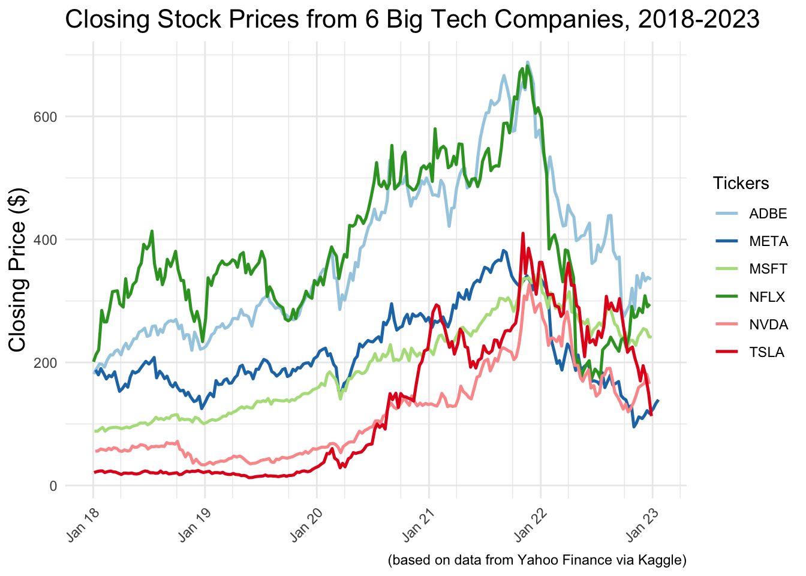
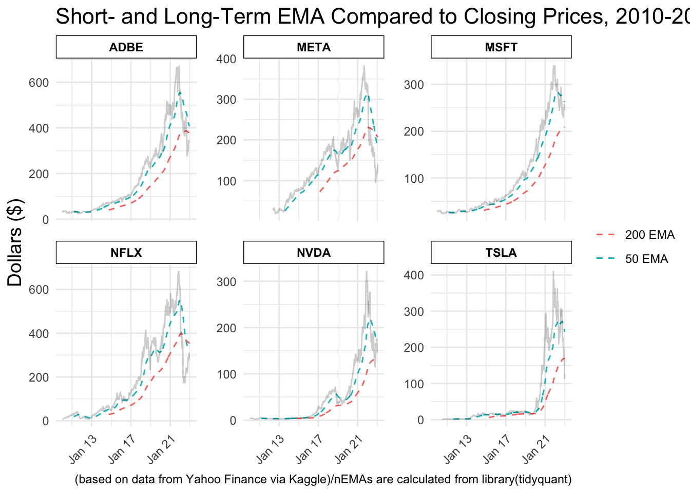

After finding a data set showing the stock prices of big tech companies, I decided I wanted to investigate to see if there were any correlations to find trends in how their prices perform. This dataset began in 2010 and went to January of 2023 so I decided to cut down the time frame to the most recent five years. I also chose to use the six companies in this dataset with the highest observed closing prices. This allows for less clutter in my visualizations.
pricesNew |>ggplot(aes(x = date,y = close)) +geom_line(aes(color = stock_symbol),linewidth = .9) +scale_color_brewer(palette ="Paired") +labs(x ="Date",y ="Closing Price ($)",title ="Closing Stock Prices from 6 Big Tech Companies, 2018-2023",color ="Tickers",caption ="(based on data from Yahoo Finance via Kaggle)") +scale_x_date(date_minor_breaks ="6 months",date_breaks ="1 year",date_labels ="%b %y") +theme(axis.text.x =element_text(angle =45,hjust =1,vjust =1),plot.title =element_text(size =16,hjust =0),axis.title.x =element_blank(),axis.title.y =element_text(size =14))

My first plot shows the change in price for these six companies and it is easy to see that around January 2022, they all began to take a hit in their price. This begged the question, were there any indicators that this was going to happen? In order to attack this, I decided to investigate the short- and long-term moving averages for each stock, specifically the exponential moving average. An exponential moving average calculates the average of the prices using a weighting multiplier that assigns more weight to later data. In general, when a short-term EMA crosses a long-term EMA, this signifies either a price increase or decrease.
To calculate this, I had to make a new data set with the dates extending further back in order to get more observations for the moving averages. I also calculated the average price so it can be used as the y-variable.
pricesMA |>ggplot(aes(x = date,y = avgPrice)) +geom_ma(ma_fun = EMA,n =50,aes(color ="50 EMA"))+geom_ma(ma_fun = EMA,n =200,aes(color ="200 EMA")) +facet_wrap(vars(stock_symbol),scales ="free_y") +scale_x_date(date_breaks ="4 year",date_labels ="%b %y") +labs(y ="Dollars ($)",colour ="Moving Averages",title ="Short- and Long-Term EMA Compared to Closing Prices, 2010-2023",caption ="(based on data from Yahoo Finance via Kaggle)/nEMAs are calculated from library(tidyquant)") +theme(axis.text.x =element_text(angle =45,hjust =1,vjust =1),plot.title =element_text(size =16,hjust =0),axis.title.x =element_blank(),axis.title.y =element_text(size =14),panel.spacing =unit(1, "lines"),strip.text.x =element_text(color ="black", face ="bold"),strip.background =element_rect(colour ="black",fill ="white"),legend.title =element_blank()) +geom_line(data = prices_select,aes(x = date,y = close),linetype =1,color ="black",alpha = .2)

Conclusion:
In this plot, I plotted the moving averages against the closing prices from Plot 1 except this time I faceted by each company in order to compare the companies individually. This leads us to our answer to the original question of if there is a trend or indicator of the price decrease. Typically, when a short-term EMA crosses above the long-term EMA, this is a signal that price might continue to move up. On the opposite hand, this means that if short-term EMA crosses below long-term EMA, price might continue to move down. In every company shown, up until the closing price drop, the short-term was above the long-term. Once as the gap between them closed, and short-term came closer to long-term, the closing prices began to decrease. In some of the companies, the short-term even dipped below the long term. In conclusion, using moving averages can be a good indicator for these companies prices going down, but likely isn’t the root of the scenario. That can be left to many other more complex factors.